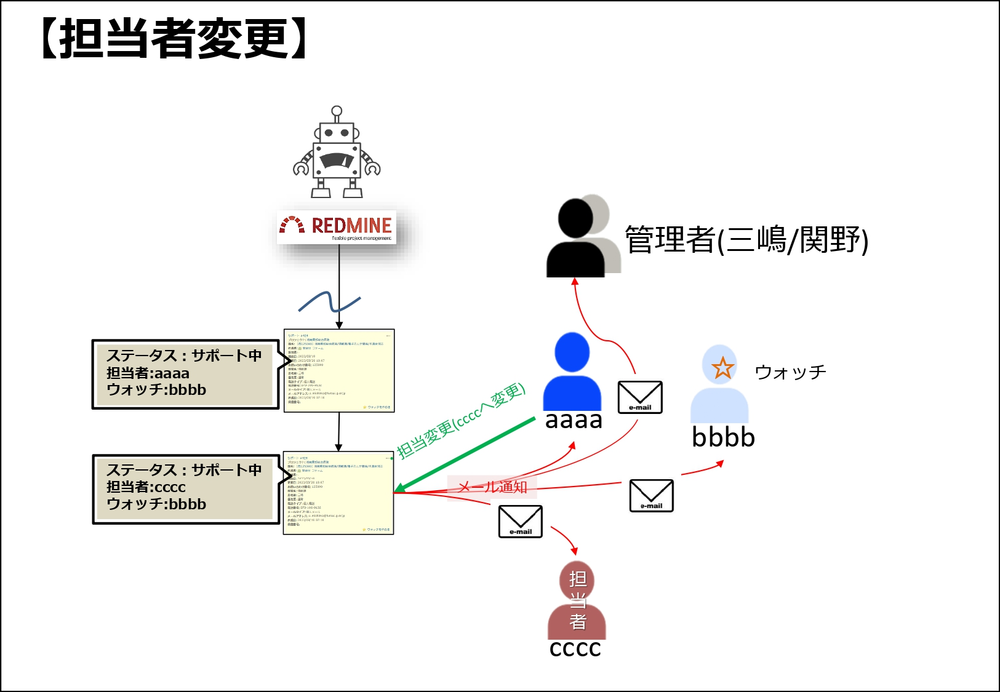
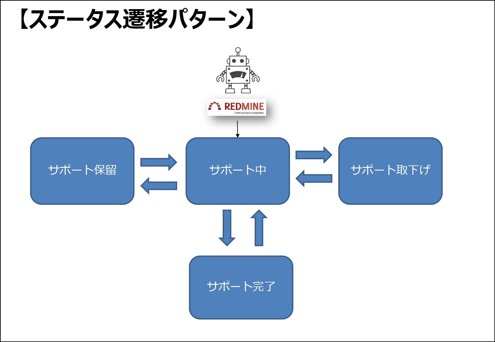

デジタル化やIT技術との連携によるサービスやビジネスモデルの変革を、情報システムとして具現化するお手伝いをします!
（0➡1）システムビジネスモデリング
デジタル技術を核とするビジネスをモデリングし、その情報システム化を支援します。また必要に応じてそのシステムの差異化要素に関するプロト設計を実施し、お客様のPoCプロセス推進に取り組みます。
（1➡10）プロジェクトマネジメント
システム設計におけるプロジェクト計画策定、要求要件管理、および進捗管理を通じてお客様のプロジェクトの成功に寄与します。